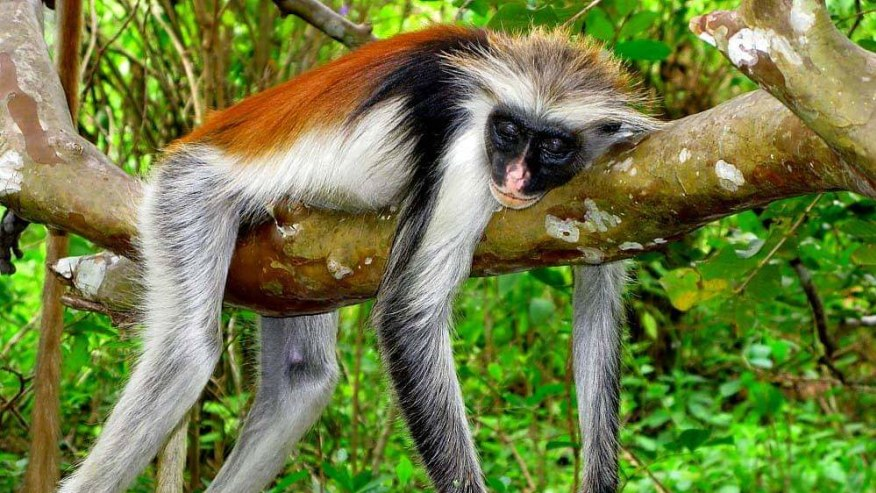
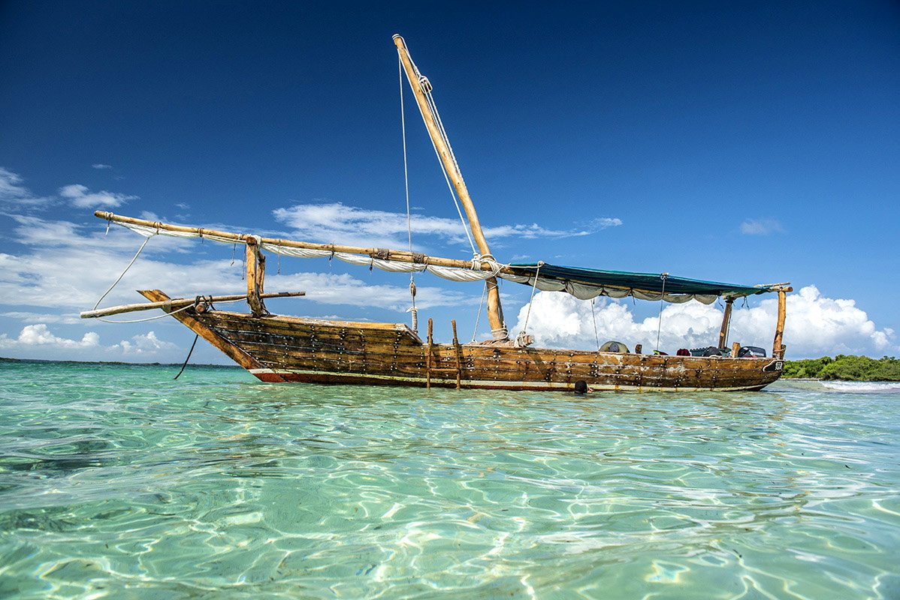
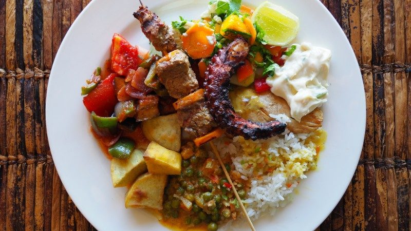

When you picture Zanzibar, images of powder-white sand, swaying palm trees, and turquoise waters likely spring to mind. And while the beaches are undeniably world-class and a major draw, the Zanzibar Archipelago offers so much more! This collection of islands off the Tanzanian coast is steeped in history, bursting with culture, fragrant with spices, and home to unique natural wonders.
Thinking of Zanzibar just as a beach destination means missing out on its rich tapestry of experiences. Whether you're relaxing after a thrilling safari or planning a standalone island getaway, make sure to explore beyond the sand. Let's dive into what makes Zanzibar truly special:
1. Step Back in Time: Historic Stone Town

The heart and soul of Zanzibar, Stone Town (Mji Mkongwe), is a UNESCO World Heritage site and a captivating labyrinth of history. Wander through its narrow, winding alleys and discover a fascinating fusion of Swahili, Arab, Persian, Indian, and European influences.
- Architecture: Admire the famous intricately carved wooden doors, ornate balconies, coral stone buildings, and hidden courtyards.
- History: Visit significant sites like the Old Fort (Ngome Kongwe), the House of Wonders (Beit-al-Ajaib - currently under restoration but visible externally), the former Slave Market and Anglican Cathedral, and the Sultan's Palace Museum.
- Atmosphere: Soak up the bustling energy of the Darajani Market, watch dhows sail from the waterfront, and simply get lost exploring its unique character.
2. Engage Your Senses: The Spice Farms
Zanzibar earned its moniker "The Spice Islands" for a reason. For centuries, it was a major hub for the spice trade. A visit to a local spice farm is a must-do sensory experience.
- Discover: See, smell, and taste exotic spices like cloves (Zanzibar's main export), nutmeg, cinnamon, cardamom, vanilla, turmeric, and black pepper growing in their natural environment.
- Learn: Guides explain the origins, uses (culinary and medicinal), and history of these valuable commodities.
- Taste: Enjoy demonstrations (like coconut climbing) and sample fresh tropical fruits often grown alongside the spices. Many tours include a traditional Swahili lunch.
3. Encounter Unique Nature: Jozani Forest
Escape the coast and explore Jozani Chwaka Bay National Park, the only national park on Zanzibar Island. It protects a unique groundwater forest ecosystem.
- Red Colobus Monkeys: The main attraction is the endemic and endangered Zanzibar Red Colobus Monkey, known for its distinctive coat and relaxed nature around humans.
- Other Wildlife: You might also spot Sykes' monkeys, bushbabies, duikers, and numerous bird species.
- Mangrove Boardwalk: Walk along the boardwalk through the vital mangrove ecosystem, learning about its importance.
4. Set Sail: Dhow Cruises & Marine Adventures
The turquoise waters surrounding Zanzibar are perfect for exploration.
- Sunset Dhow Cruises: A classic Zanzibar experience – sail gracefully on a traditional wooden dhow as the sun dips below the horizon.
- Snorkeling & Diving: Explore vibrant coral reefs teeming with marine life at renowned spots like Mnemba Atoll or around Pemba Island.
- Island Hopping & Sandbanks: Take boat trips to nearby islands like Prison Island (Changuu) to see giant tortoises or enjoy picnics on secluded sandbanks.
5. Immerse in Culture: Food, Markets & Local Life
Zanzibar's culture is a rich blend of influences, best experienced through its people and flavours.
- Culinary Delights: Sample fresh seafood, Swahili dishes infused with spices (like Biryani or Pilau), tropical fruits, and strong Zanzibar coffee.
- Forodhani Gardens: Experience the lively evening food market in Stone Town, trying local street food like Zanzibar pizza, grilled seafood skewers, and fresh sugarcane juice.
- Village Visits: Engage respectfully with local communities outside the main tourist areas to get a glimpse of daily life (best arranged through responsible tour operators).
6. Venture Further: Pemba & Other Islands
While Unguja (Zanzibar Island) holds the main attractions, the archipelago offers more:
- Pemba Island: Known as the "Green Island," it's less developed, hillier, famous for cloves, and offers world-class, untouched diving experiences.
- Mafia Island (South): Technically separate but often considered, renowned for its Marine Park and seasonal whale shark encounters.
- Smaller Islets: Offer exclusive resorts or simple day trip destinations.
Beyond the Beach Bliss
While sinking your toes into Zanzibar's soft sands is essential, dedicating time to explore its historical heart, aromatic spice farms, unique wildlife, and vibrant culture will transform your trip from a simple beach holiday into a truly rich and unforgettable East African experience.
Let Golden Memories Safaris help you design a Zanzibar itinerary that perfectly balances relaxation with exploration, showcasing the best of what these incredible islands have to offer.
Explore Zanzibar Options Contact Us to Plan